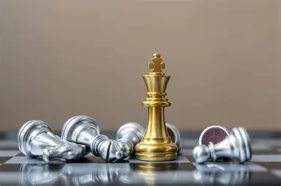
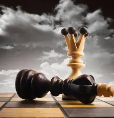
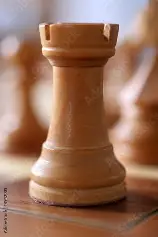
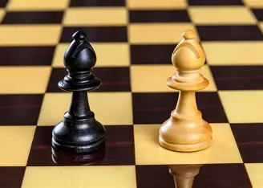
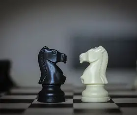
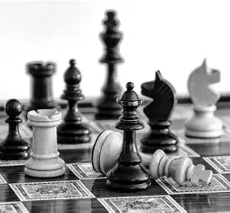

Les pièces et le fonctionnement du jeu
Le jeu d’échecs se joue sur un échiquier de 64 cases avec deux couleurs : noir et blanc. Chaque joueur commence avec 16 pièces.
La partie commence toujours avec les pièces placées de la même manière sur l’échiquier. Les joueurs jouent chacun leur tour en essayant d’attaquer les pièces adverses et de protéger leur roi.
- Le roi : il se déplace d’une seule case dans toutes les directions.

- La dame : elle se déplace dans toutes les directions sur un nombre illimité de cases.

- Les tours : elles se déplacent horizontalement et verticalement sur un nombre illimité de cases.

- Les fous : ils se déplacent diagonalement sur un nombre illimité de cases.

- Les cavaliers : ils se déplacent en L, en allant deux cases dans une direction et une case perpendiculaire.

- Les pions : ils se déplacent d’une case vers l’avant, mais capturent en diagonale.

Les règles des échecs ♟️
Les échecs se jouent entre deux joueurs sur un échiquier composé de 64 cases (32 blanches et 32 noires). Chaque joueur commence la partie avec 16 pièces
Le but du jeu est de mettre le roi de l’adversaire en échec et mat, ce qui signifie que le roi ne peut plus se déplacer pour échapper à l’attaque.
Il existe également d’autres règles importantes, telles que la promotion des pions, le roque, la prise en passant, etc. Les joueurs doivent également faire attention à ne pas se retrouver en échec, car cela signifie que leur roi est attaqué et doit être protégé.